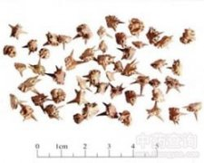

蒺藜

拼音
Jí Lí
别名
刺蒺藜、白蒺藜、硬蒺藜
来源
本品为蒺藜科植物蒺藜Tribulus terrestris L. 的干燥成熟果实。秋季果实成熟时采割植株，晒干，打下果实，除去杂质。
生境分布
生于田野、路旁及河边草丛。各地均产。主产河南、河北、山东、安徽、江苏、四川、山西、陕西。
药材特点
一年生匍匐草本，多分枝，全株有柔毛。羽状复叶互生或对生；小叶5～7对，长椭圆形，长6～15mm，宽2～5mm，基部常偏斜，有托叶。花单生于叶腋；萼片5；花瓣5，黄色，早落；雄蕊10，5长5短；子房上位，5室，柱头5裂。花期6～7月，果实8～9月。
性状
本品由5个分果瓣组成，呈放射状排列，直径7～12mm。常裂为单一的分果瓣，分果瓣呈斧状，长3～6mm；背部黄绿色，隆起，有纵棱及多数小刺，并有对称的长刺和短刺各1对，两侧面粗糙，有网纹，灰白色。质坚硬。无臭，味苦、辛。
性味
辛、苦，微温；有小毒。
功能主治
平肝解郁，活血祛风，明目，止痒。用于头痛眩晕，胸胁胀痛，乳闭乳痈，目赤翳障，风疹瘙痒。
用法用量
6～9g。
化学成分
含甾体皂甙，其皂甙元为薯蓣皂甙元（diosgenin）、鲁期可皂甙元（ruscogenin）、海可皂甙元（hecogenin）、吉托皂甙元（gitoogenin）等，另含蒺藜甙（tribuloside）、山柰酚-3-芸香糖甙（kaempferol-3-rutinoside）、紫云英甙（astragalin）、哈尔满碱（harmine）等。
药理作用
1：无药理作用
摘录
《中国药典》